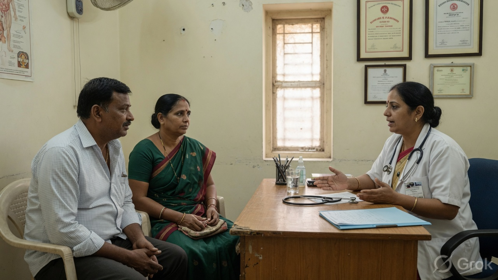
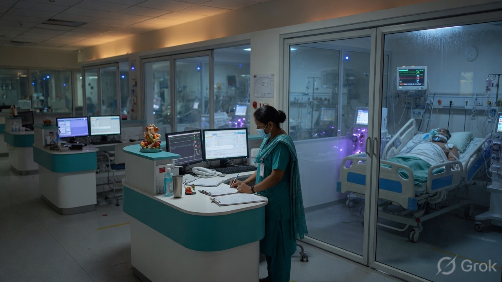
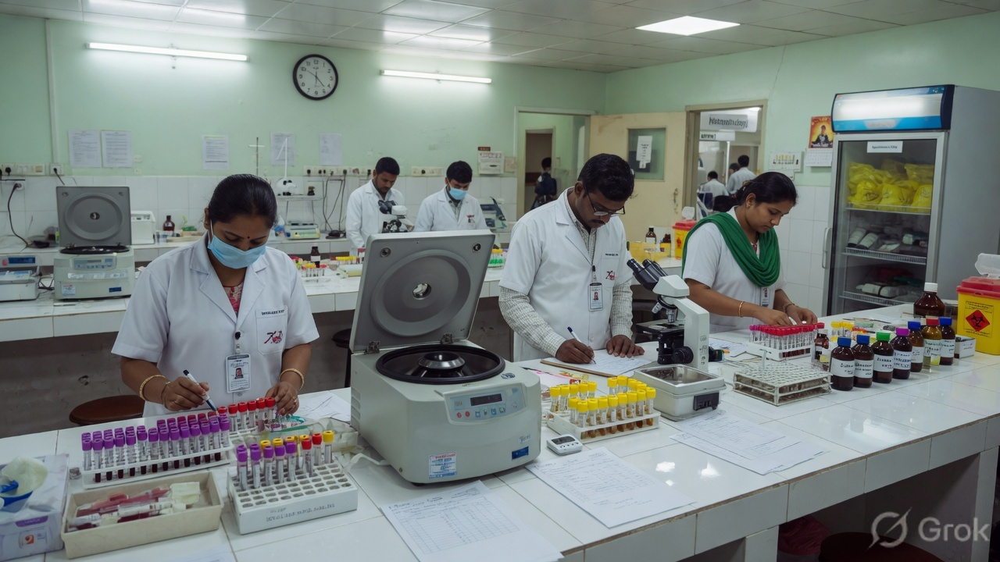

MediCore grew out of a busy Mumbai campus where families waited too long at reception and nurses hunted for paper charts. Today the wards, clinics and emergency desk share one live record.


We sat with receptionists juggling diaries, nurses hunting for bed charts and families waiting for a scan result — and built the hospital around that day.
Patients can open their own file online. Doctors run the floor. The administrator can see staff desks, patient records, or both at once.
Every screen shortens the distance between a patient and care.
Records, rooms, tests and invoices stay linked across departments.
Only authorised staff can open the console. Every save is written to the hospital database.
Tea at the cafeteria, a quiet maternity floor, and a night porch that never locks.

Labs, ICU and the morning handover share one record so a night nurse is not hunting for a paper chart.